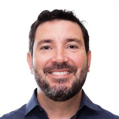
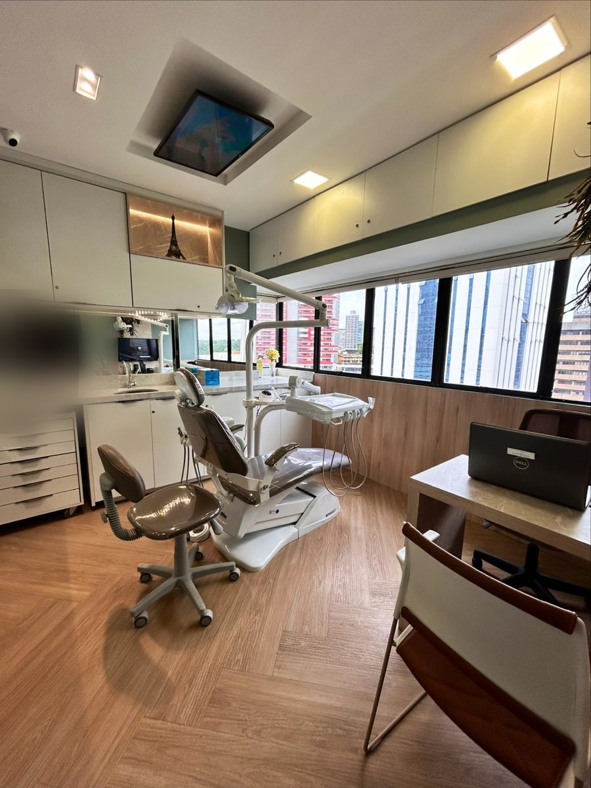

Início · Tratamentos · Prótese e reabilitação oral
Prótese e reabilitação oral: mastigar, falar e sorrir de novo.
Próteses fixas e removíveis e reabilitações orais estão entre os tratamentos que o Dr. Luciano declara. Por cinco anos, foi cirurgião-dentista protesista do Hospital Naval de Salvador. A indicação é individual, definida na avaliação.

Entenda
O que é reabilitação oral
Reabilitação oral é o conjunto de tratamentos que devolve função e aparência a uma boca com dentes perdidos, muito desgastados ou com restaurações grandes. Pode ser uma coroa num só dente ou um plano que envolve a boca inteira.
A prótese é a peça que substitui o que foi perdido — parte de um dente, um dente inteiro ou vários. Ela pode ser fixa (cimentada ou parafusada) ou removível (a pessoa tira para limpar).
“Minha abordagem é centrada no paciente, com planos personalizados que aliam estética, função e durabilidade. Atuo com visão multidisciplinar […]. Prezo por um atendimento humanizado, transparente e seguro.”Descrição do Dr. Luciano na ficha do Google · ver a ficha
Opções
Tipos de prótese
Coroa
Cobre um dente muito destruído ou tratado de canal, devolvendo forma e resistência.
Ponte fixa
Repõe um ou mais dentes apoiando-se nos dentes vizinhos.
Prótese removível
Parcial ou total, apoiada nos dentes e na gengiva; é retirada para a higiene.
Prótese sobre implante
Fixada em implantes: de um dente até a arcada inteira. Implantes.
Qual prótese, com que material e em que ordem: isso depende do exame, dos dentes que restam, do osso e do que você espera do tratamento.
Passo a passo
Etapa por etapa
- AvaliaçãoExame clínico, radiografias e, quando indicado, tomografia e fotos.
- PlanejamentoPlano com a sequência dos tratamentos, a partir dos exames e do escaneamento digital.
- Preparos e provisóriosOs dentes são preparados e, enquanto a peça é feita, uma prótese provisória protege e mantém a estética.
- ProvasProva de forma, cor e mordida, com os ajustes necessários.
- Instalação e revisõesInstalação da peça final e revisões para acompanhar o encaixe e a gengiva.
Indicação
Quando é indicada
- Um ou mais dentes perdidos.
- Dentes muito desgastados ou fraturados.
- Restaurações grandes, antigas ou com infiltração.
- Próteses antigas que não encaixam mais ou incomodam.
- Dificuldade para mastigar.

Depois
Cuidados com a prótese
- Escovação e fio dental (ou escovas interdentais) todos os dias, também ao redor das peças fixas.
- Prótese removível: limpar fora da boca e seguir a orientação sobre retirar para dormir.
- Revisões periódicas para conferir encaixe, mordida e gengiva.
- Procurar o dentista se a peça soltar, quebrar ou machucar.
Dúvidas frequentes
Perguntas comuns
Prótese fixa ou removível: qual é melhor para mim?
Depende dos dentes que restam, do osso, da saúde da gengiva e das suas expectativas. As opções são apresentadas na avaliação.
Quanto tempo dura uma prótese?
Não há prazo fixo. Higiene, revisões e hábitos como ranger os dentes influenciam a duração.
Fico sem dente durante o tratamento?
Em geral, uma prótese provisória é instalada enquanto a prótese final é feita. Isso é combinado no planejamento.
Dá para trocar uma prótese antiga?
Sim, quando indicado. A avaliação mostra o que pode ser aproveitado e o que precisa ser refeito.
Agende
Comece pela avaliação.
Atendimento com hora marcada em Patamares, no Wall Street Empresarial. Fale direto com o Dr. Luciano pelo WhatsApp (71) 99306-1111 e confirme dia e horário.